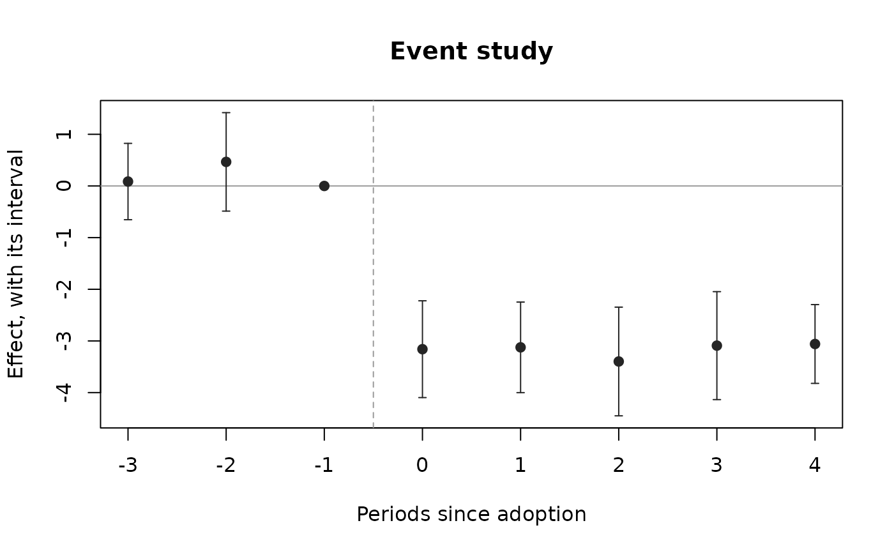

An event study: the effect period by period around adoption
Source:R/policy_evaluation.R
evstudy.RdLeads and lags of a policy's adoption, from a two-way fixed-effects regression on indicators of the time since adoption, with a joint test that the leads are zero (no effect before the policy, the testable part of parallel trends).
Usage
evstudy(
data,
unit,
time,
y,
ftreat,
leads = 4L,
lags = 4L,
ref = -1L,
bin = TRUE,
covs = NULL,
cl = NULL,
conflvl = 0.95
)Arguments
- data
A data frame, one row per unit and period.
- unit, time, y
Column names: the unit, the period (numeric, for example a year or a month index) and the outcome.
- ftreat
Column name of the period a unit is first treated (
NA, 0 orInffor a unit never treated). Treatment is taken as staying on.- leads, lags
The number of periods before and after adoption to estimate (default 4 and 4).
- ref
The period left out (default -1).
- bin
Bin the periods beyond the window into its end points (default
TRUE).- covs
Optional column names of time-varying controls.
- cl
Column name of the clusters (default the unit), or two column names for two-way clustering (Cameron, Gelbach and Miller 2011): \(V_a + V_b - V_{ab}\), each term with the small-sample factor of the dimension with fewer clusters, and t on its \(G - 1\) degrees of freedom. A composite cluster (district by month, say) is one column made with
interaction().- conflvl
Confidence level (default 0.95).
Value
A data frame of class rmbl_event_study: evtm,
estimate, se, lower, upper, t, p_value,
with the reference period as a row of zeros; attributes pretrend (a list:
F, df1, df2, p_value), vcov (of the estimated
event times), n, clusters, conflvl. plot() draws
it.
Details
With \(G_i\) the first treated period of unit \(i\) and
\(k = t - G_i\),
$$Y_{it} = \sum_{k = -L, k \ne r}^{M} \gamma_k \mathbf 1(t - G_i = k) +
X_{it}'\theta + \delta_i + \mu_t + \varepsilon_{it},$$ with the reference period \(r\) (default -1,
the period before adoption) left out. Times beyond the window are binned into its
end points (bin = TRUE), or dropped. Units never treated have every
indicator 0. The variance and degrees of freedom are those of
plndid. The pre-trend test is the Wald statistic
\(W = \hat\gamma_{pre}'\hat V_{pre}^{-1}\hat\gamma_{pre}\), reported as
\(F = W/q\) on \(q\) and \(G - 1\) degrees of freedom.
With staggered adoption and effects that change over time, the lead and lag
coefficients can mix in effects from other periods (Sun and Abraham 2021);
stgatt gives the event-time effects free of that.
References
Sun L, Abraham S (2021). Estimating dynamic treatment effects in event
studies with heterogeneous treatment effects. Journal of Econometrics
225(2):175-199.
doi:10.1016/j.jeconom.2020.09.006
Applied to the effect of donations on police stops, block by quarter: Zorro Medina A, Hackett D, Green D, Vargas R (2025). Evidence of donor bias in Chicago police stops. arXiv:2504.15140 (https://arxiv.org/abs/2504.15140).
Examples
p <- polex()
es <- evstudy(p, "district", "month", "crmrate", "refmonth", leads = 3,
lags = 4)
es
#> Event study: 720 observations, 20 clusters
#> evtm estimate se lower upper t p_value
#> -3 0.08562 0.3530 -0.6532 0.8245 0.2425 8.110e-01
#> -2 0.46611 0.4552 -0.4867 1.4189 1.0239 3.188e-01
#> -1 0.00000 0.0000 0.0000 0.0000 NA NA
#> 0 -3.15973 0.4476 -4.0966 -2.2229 -7.0592 1.020e-06
#> 1 -3.12400 0.4189 -4.0007 -2.2473 -7.4580 4.675e-07
#> 2 -3.39773 0.5025 -4.4496 -2.3459 -6.7611 1.853e-06
#> 3 -3.09069 0.4993 -4.1356 -2.0457 -6.1906 6.005e-06
#> 4 -3.05909 0.3644 -3.8218 -2.2963 -8.3941 8.145e-08
#> Leads jointly zero: F(2, 19) = 1.016, p = 0.381
attr(es, "pretrend")$p_value
#> [1] 0.380962
plot(es)
